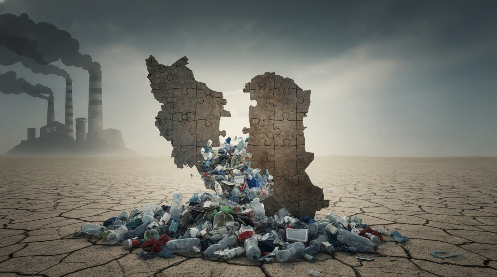
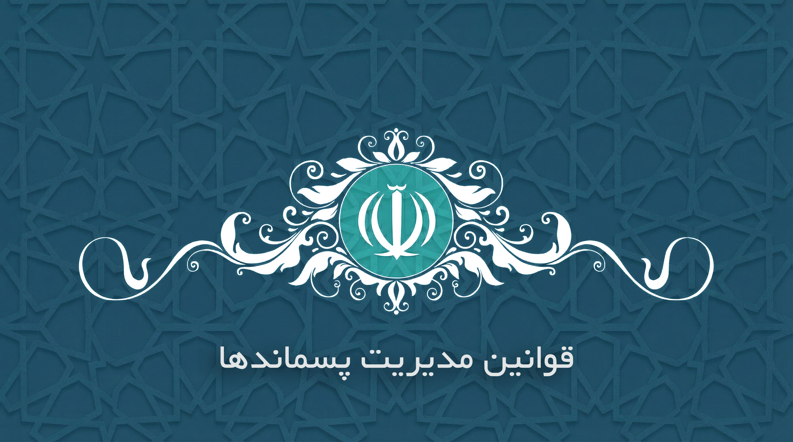
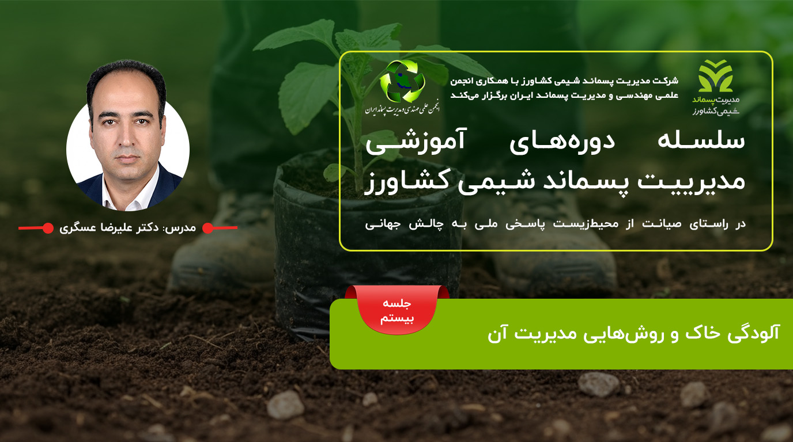

درباره ما
اعضای هیات مدیره
اخبار
دورهها و کارگاهها
نشستها
کمیتههای اصلی
مدیریت پسماند
▾
قانون مدیریت پسماندها
فناوریهای مدیریت پسماند
شرکتهای مدیریت پسماند
سیستم یکپارچه
انتشارات
کنفرانسها
شعب استانی
عضویت
ارتباط با ما
اخبار و رویدادها
در این بخش میتوانید آخرین اخبار، مقالات و رویدادهای انجمن را مشاهده کنید.

شکافهای قانون ملی مدیریت پسماندهای پلاستیکی در ایران
مشاهده کامل ←
چهارمین مدرسه زمستانه مدیریت پسماند
مشاهده کامل ←
چهارمین مدرسه زمستانه مدیریت پسماند: مفاهیم و آزمونهای شیمیایی (دوره ششم)
مشاهده کامل ←

متن کامل قانون مدیریت پسماندها
مشاهده کامل ←

دوره آموزشی: آلودگی خاک و روشهای مدیریت آن
مشاهده کامل ←